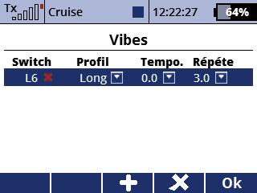

Avec cette app on peut faire le vibrateur haptic respondre a events avec le radio DS-12. Cette application vous permet de configurer le contrôle des événements du vibrateur haptique dans votre radiocommande DS-12. Il est similaire au menu Sons evénements.
Vous pouvez télécharger le code source depuis le référentiel GitHub SoarJETI.